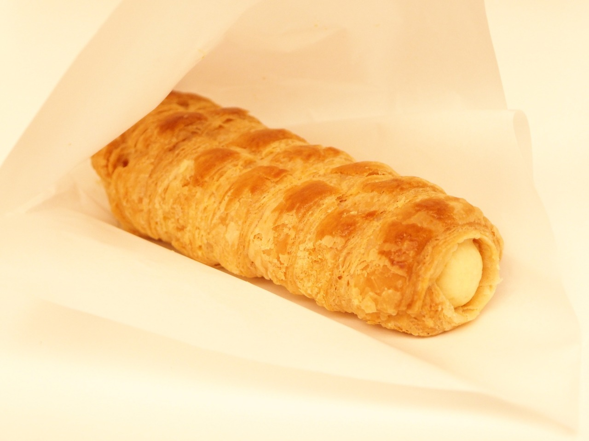
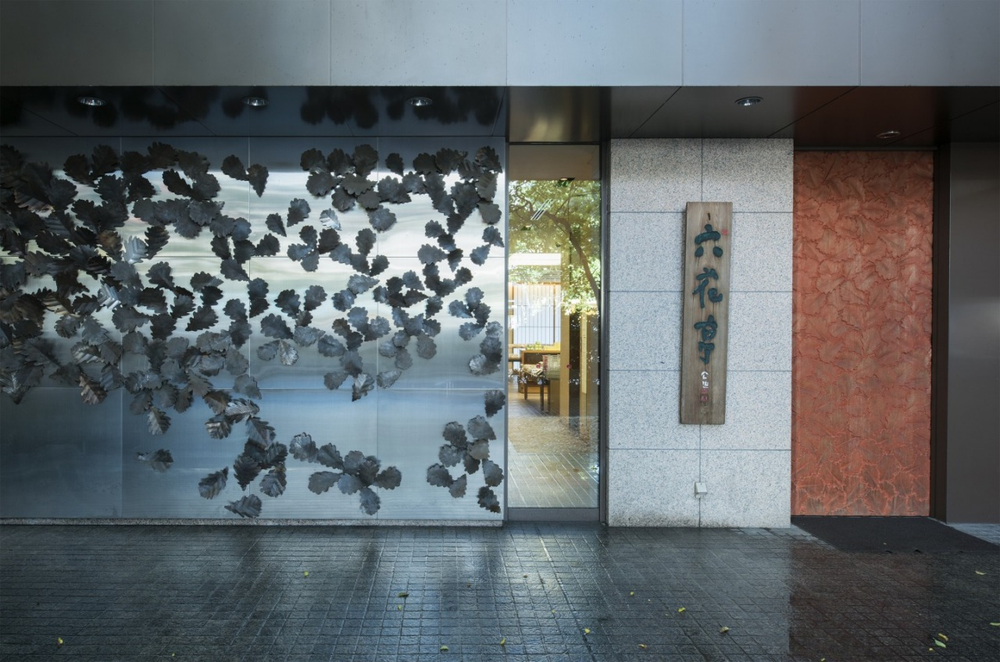
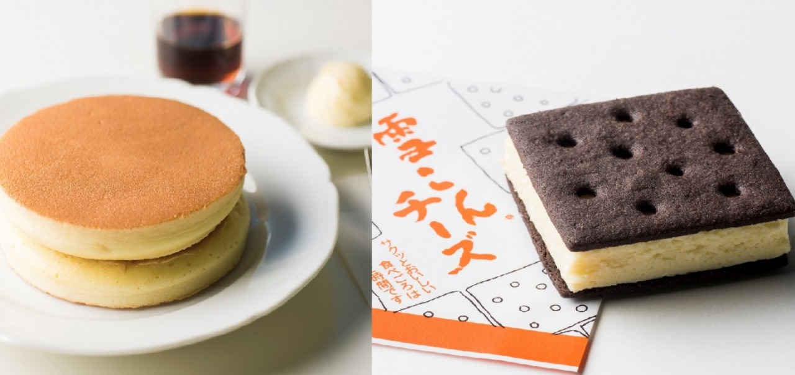

Photo Gallery
六花亭 帯広本店とは
「マルセイバターサンド」「ストロベリーチョコ」でお馴染みの北海道を代表する菓子ブランド「六花亭」の総本山が帯広本店です。帯広駅から徒歩圏内に位置し、本店限定メニューを目当てに道内外から多くのファンが訪れます。1階はショップ、2階はカフェスペースとなっています。
実食レビュー
本店限定の「サクサクパイ」は焼き立てを提供しており、バタークリームの風味と軽い食感が絶品。通常販売品では味わえないフレッシュ感があります。2階カフェのケーキセットはリーズナブルで、帯広観光の休憩スポットとして最適。
メニューと価格
📎 公式Webサイト
現在、独立した公式Webサイトは確認できていません。最新情報はお電話または各グルメサイトでご確認ください。
アクセス・予約
訪問のコツ・おすすめの楽しみ方
🥐 サクサクパイは午前中に
焼き立てのサクサクパイは午前中（9〜11時）に訪問すると確実。昼を過ぎると売り切れることも多い。
- 2階カフェでケーキセット（コーヒー付き）を注文するとコスパ最強。
- 1階ショップではお土産もまとめて購入可能。帯広・十勝限定商品も要チェック。
- 帯広競馬（ばんえい競馬）観光と組み合わせるのが帯広定番コース。
- 「インデアン」の豚丼と合わせた帯広グルメ巡りも人気。